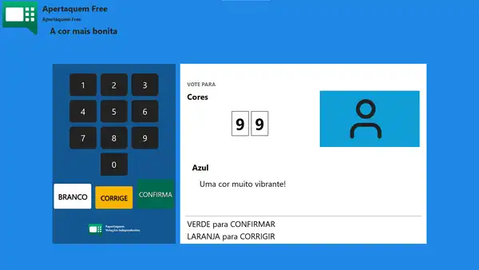
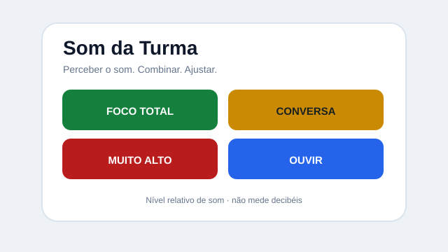
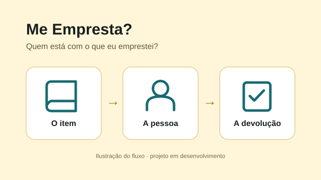

Disponível · Free e Premium
Apertaquem
Transforme um computador em urna para votações e consultas.
Usar o Apertaquem ↗Ferramentas · projetos · formação
Crio ferramentas e projetos a partir de problemas reais da escola. Encontre o que usar, conheça meu trabalho ou traga uma necessidade.
Os links abrem em nova aba. Você também pode continuar descendo para conhecer os três caminhos.
Uma ferramenta para cada necessidade. Escolha a sua.

Transforme um computador em urna para votações e consultas.
Usar o Apertaquem ↗
Ajude a turma a perceber e regular coletivamente o volume do ambiente.
Experimentar o Som da Turma ↗
Saiba quem está com o que você emprestou, sem complicar o registro.
Conhecer o Me Empresta? ↗Quem está por trás das soluções.
Sou Marcelo Santos, educador, pesquisador e criador de soluções para educação. Gosto de transformar uma necessidade em algo que possa ser usado de verdade.
Minha trajetória conecta escola pública, gestão, formação de educadores, pesquisa e desenvolvimento de produtos. É desse encontro que nascem minhas criações.
Conhecer minha trajetória ↗Uma necessidade pode ser o começo de uma nova solução.
Tem um problema para resolver?
Conte o que faz falta no seu trabalho. Podemos pensar em uma ferramenta, um processo, uma formação ou um projeto para sua escola ou rede.
Escuto o contexto e o que precisa mudar.
Definimos uma resposta inicial com escopo claro.
O uso real mostra o que ajuda e o que falta.
Melhoramos a solução sem perder sua simplicidade.